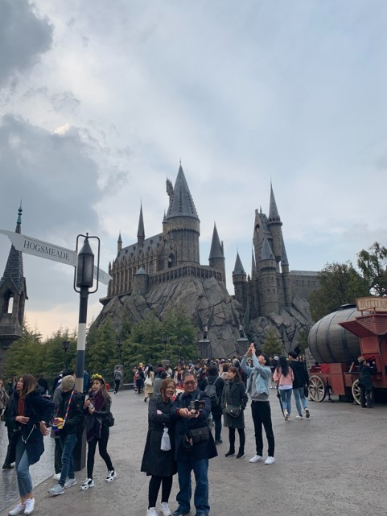
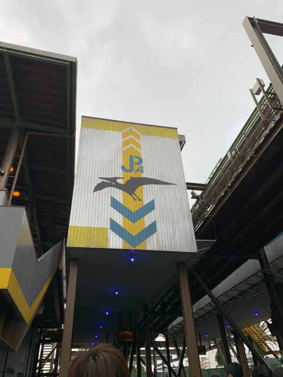

初日。夜行バスで朝に大阪駅に到着。まずは腹ごしらえのために難波に移動！
キャーリーバックは邪魔になるので駅のコインロッカーに預けて準備満タン。道頓堀を食べ歩きます。
道頓堀

道頓堀は大阪を代表する観光地。たこ焼きに、お好み焼きと粉ものを食べて満喫。朝から食い倒れました。グリコ、かに道楽などユニークな看板の前では写真をパシャリ。ぜひ訪れたときは思い出を写真に残しましょう。
お昼までゆっくりと食べ歩いた後は、なんばグランド花月に歩いて移動。
なんばグランド花月

ここは吉本興業が運営する劇場となっています。毎日日替わりで芸人さんが漫才や劇をしていて、年中無休で笑いが飛び交っています。本場の漫才劇場に行って笑うのいい経験になるのではないでしょうか！
夕方まで笑った後は、アメリカ村でお買い物
アメリカ村

関西の若者文化の発信地。古着、衣料、雑貨など様々な店舗が立ち並びます。最先端のスイーツも集まり、ちょっとした休憩に最適！ 古着が好きな僕は、パーカーとジーンズを購入。お手軽な価格でゲットしました。
１日目の目的地はここで終了。明日のUSJに備えて早めにホテルへ。ゆっくりと休みました。
2日目
2日目はUSJに行くため早起き。開園前から並びます。開園前から多くの人が並んでいるので、たくさんアトラクションに乗りたい人は絶対に早く行くべき！
USJ
 USJはいろんな楽しみ方が、、。様々なアトラクションに、ショー、いたるところにかわいいキャラクターたちが出迎えてくれます。何度も何度も行きたくなるのような夢のテーマパークとなっています。僕の一押しは、フラインクダイナソーというアトラクション。高低差を楽しむジェットコースターで足が浮いて乗るのでスリル満点。ぜひ挑戦してみては？
2日目はUSJを朝から晩まで満喫しました。ここまでは1日目と2日目の旅行記でした。次のページでは最終日の様子とあとがきです。